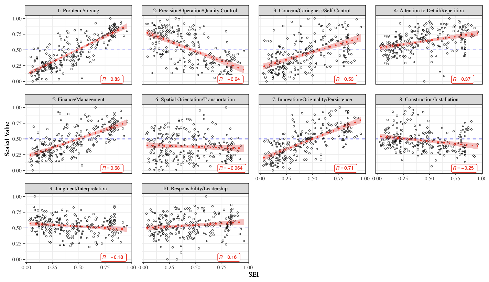
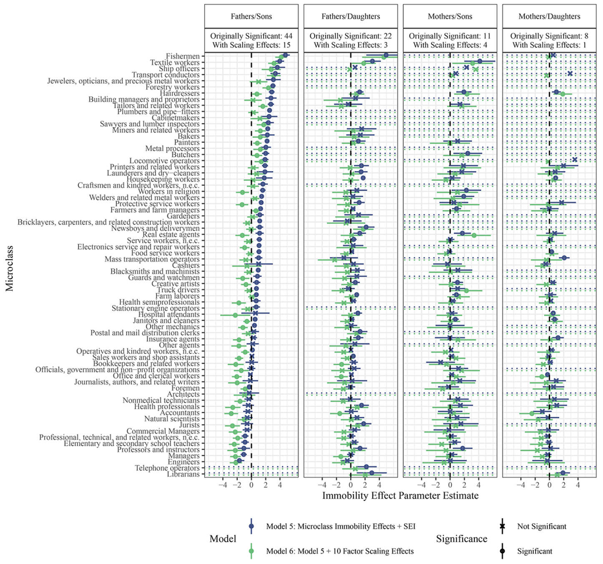
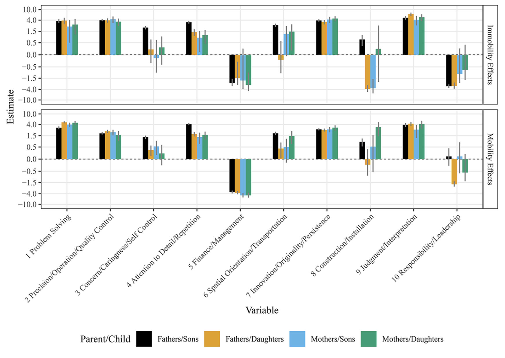

RCIS文献購読資料
要約
イントロダクション
階級は社会的不平等を説明する重要な概念だが、その意義には疑問が提出されてきた。
「階級の死」：ジェンダーや人種、政治的態度などが階級以上に個人のアウトカム決める(Clark and Lipset 1991; Pakulski and Waters 2019)
「階級の分解」：階級を経済的・政治的差異以上の側面から区分する（いわゆる「マイクロクラス」）
- いずれも立場でも地位の多次元性が重要であることを論じている
しかしながら、連続的な観点から社会的地位を捉える研究において、階級の多次元性を考慮した研究は少ない。本研究では世代間職業移動を事例に、職業の異なる側面それ自体がどのように伝達されるのかを検証し、職業が差異化し、再生産するのかを明らかにする。
職業の捉え方にはgradationalism（連続主義）とcategoricalism（カテゴリ主義）の2つがある。それぞれに社会的分業にたいする理論的検討の伝統が存在する。
gradationalistは階級集団に境界を想定せず、連続的な軸から扱う
categoricalistは階級の明確な区別を想定し、個人は特定のカテゴリに属するものと考える
近年ではマイクロクラスの台頭によってよりcategoricalismが支持されている。マイクロクラスはいわゆるマクロクラス「内」の不平等が増加していること、世代間再生産のかなりの部分は、ミクロクラスの再生産に起因することがその根拠である。
本研究ではマイクロクラスが提供した説明をgradationalismにも拡張し、多次元的なgradational analysisがマイクロクラスより倹約的であり、新たな世代間移動における不平等の側面を明らかにすることを示す。
それにより、理論的にはgradationalismとcategoricalismがそれぞれ類似した基盤を持つことを示す。実践的には、世代間再生産の潜在的なメカニズムを職業間の性質から説明する。結果的に、gradationalismとcategoricalismが相補的であるとするcategorical-gradationalの混淆アプローチを提案する。
世代間移動を研究するための2つの方法論的アプローチ
単一次元連続アプローチ
単一次元連続アプローチは、Blau and Duncan(1967)の地位達成モデルで導入された。単一次元連続アプローチを採用してきた研究者は社会的地位および威信の連続的な性質を所与として、もっとも良い尺度をつくることに心血を注いできた。
これにたいして経済学では収入を連続的な社会的地位の指標としてきた。しかし、経済学では収入それ自体が複層的で相互関連するヒエラルキーのなかでいかにして個人の社会的地位を規定するのか、いかにして世代間移動に影響を与える原動力となるのかにたいする説明は提供されていない。収入はEGPのようなcategoricalismな測定と相関しているものの、単一の指標は世代間再生産の見地では過度に単純化されている。
単一次元連続アプローチはウェーバーの地位の視点に依拠している。ウェーバーによると、名誉、特権、報酬、権力、経済的・文化的財、その他ライフチャンスは関係的に差異化される。単一次元連続アプローチは、それぞれの職業を相対的に優劣をつけるだけでなく、職業間の距離を測定し、その間を移動する可能性の大まかな指標とすることができる。
単一次元連続アプローチは一見単純化された指標に見えるが、時間的・空間的に安定的であり(Treiman 1977)、社会構造に依拠しない一般化可能性をも含有している。そのほか、単一次元連続アプローチは測定可能な特徴にもとづいて構成される（例、SEIは各職業の学歴と収入の重みづけ平均）。
単一次元連続アプローチは、その測定が標準であり、距離が正確であり、現実を適切に反映しており、十分に序列を捉えている、といった仮定を置いている。線形的な階級理解は職業構造の分節化（移動「境界」）を無視し、1970年以降衰退していった。
カテゴリカルアプローチ
カテゴリカルアプローチはマルクスの階級闘争の理論以降社会学に広がった。しかしながら、初期のcategoricalistはその根本に連続性と多次元性を認めていた（マルクス、ソローキン、Perrin）。Ganzeboom et al. (1991)が「移動研究の第一世代」と呼んだかれらは、主に計算の負荷と簡便さといった方法論的な見地からカテゴリに依拠していた。
カテゴリカルアプローチは20世紀中頃に花開き、水平移動／垂直移動、流入割合inflow／流出割合outflow、移動比mobility ratioといった指標やマルコフ連鎖モデルなどを開発・提供していった。
カテゴリカルアプローチはその後Blau-Duncanの地位達成モデル以降停滞したが、マルコフ連鎖モデルの移動が職業構造を形成する、という仮定を克服するログリニアモデルがあらわれ、再び息を吹き返した。
ログリニアモデルの革新的なところは、職業にたいする社会的需要によってもたらされる移動（構造的移動structural mobility）と努力や親の投資、運といった個人的な見地から生じる移動（交換移動exchange mobility）とを区別して移動を推定できるところにある。
このログリニアパラダイムの潮流から生まれた研究が時空間を横断した移動レジーム研究、そしてEGP階級分類である。EGP階級分類は階級の連続性を否定し、「現実主義」的な階級を否定し、そして階級の社会的な側面と経済的な側面を、アイデンティティと物質的とで区別するかたちで分離させている。EGPは階級を（階級アイデンティティとは逆の）すぐれて経済合理的な構築物とみなすが、にもかかわらず日々の生活に浸透した集合体として維持されることを論じる。
このように、モデルとしてだけでなく理論的にもcategoricalismは進展し、今日までこの議論は持続している。
このログリニアモデルの使用はBourdieu(1984)の文化主義culturalismによっても担われた。Bourdieu(1984)は価値観やライフスタイルといった美的嗜好が階級の差異を産むことを論じている。そのほか、ジェンダーや人種・エスニシティを階級とみなす視点や(Andersen and Hill Collins 2020)、ネオマルクス主義(Wright 1997)、ネオウェーバー主義(Goldthorpe 2000)といったカテゴリカルな分類も存在した。
Categoricalismのマクロからミクロへの以降
近年の階層研究ではサブ集団の異質性への関心が高まっている。その際たる例が組合や職業免許など社会的閉鎖のメカニズムを分解し、カテゴリ化された階級そのものを生産の現場site of productionに位置づけるマイクロクラス論である。マイクロクラス論は職業それ自体が適切な階級を構成すると論じる。
マイクロクラス論は「閉鎖メカニズムは主に職業のレベルにおいてのみ存在している」ことを仮定している(Weeden and Grusky 2005, p.151)。閉鎖メカニズムには免許証や訓練要件といったフォーマルなものも含めれば、ライフスタイルや政治志向といったインフォーマルなものも含まれる。本論文ではこのような閉鎖メカニズムは特定の職業にあり、別の職業にはない、といった見地ではなく、職業の特徴にもとづいてその程度がまたがっていると論じる。
ビッグ・クラスとマイクロクラスは社会移動のトレンドを異なる視点から示すという点において相補的なものである。マイクロクラス論がそれまでの理論の改善であるように、本論文もcategoricalismと一次元的思考とを前進させるものである。
それ以前のカテゴリー主義的な仕事に対する改善であったように、以下に示す拡張漸進的アプローチは、カテゴリー主義的な思考と、それ以前の一次元漸進的な思考の両方を前進させるものである。
| カテゴリカル | 連続的 | |
|---|---|---|
| 一次元的 | - EGP階級分類 | - 社会経済的指標（SEI） |
| - （ネオ）マルクス主義 | - 職業威信 | |
| - 地位、自律性、訓練モデル | ||
| - 職業スキル | ||
| - 世代間職業移動 | ||
| - 職業・ライフスタイル | ||
| - データ入力・使用・管理 | ||
| 多次元的 | - マイクロクラス | - 職業本質主義 |
| - DOT | - 非経済的職業評価 | |
| - Alphabetic Index of Occupations | - 本研究 |
多次元連続アプローチ
多次元連続アプローチは生産の現場site of productionで発生するの変動を捉えるために複数の職業属性を直接測定する。多次元連続アプローチは職業に関連する労働者のスキルや適性、知識だけでは十分ではなく、価値観や仕事のスタイルなど、職業にとどまることincumbencyに関連する仕事の側面も測定しなければならない。
多次元連続アプローチはGoodmanのRC2モデル（世代間の親和性パラメータと、各職業の連続的的特性（2次元）のパラメータで示される移動データの事後推定値を提供するモデル）とHout(1984)の研究（多次元空間を構成する職業特性の潜在的な軸があることを仮定）の中間として位置付けられる。特定の軸があるという仮定は置かないけれども、それらの軸は解釈可能であり、根幹のプロセスを最大限に反映する、ということは想定している。
多次元連続アプローチはBourdieu(1984)の多重対応分析を世代間移動に拡張する。世代間職業移動の不可欠な構成要素はスキルだけでなく、価値意識や気質dispositionsも含まれ、そういった側面をブルデューがおこなったように考慮する必要がある。帰納的で解釈可能であると同時に、スキルや知識、能力以外の職業特性を取り込無ことを提案する。
地位のとどまらない職業の連続的特性を示す研究は経済学・社会学で十分に存在する。スキル偏向型技術変化（コンピュータなどの使用が増えることで分析スキルの需要が増加する）、スキルの移転可能性などがあるが、それらは理論から導出された定義を用いて分析している。
近年のネットワーク分析からも、多次元連続アプローチの重要性は示唆されている。職業間のつながりは必ずしも垂直的であるだけでなく、スキルやタスク、ライフスタイル、産業、職場といった水平的な側面をも含む。マイクロクラス論はこうした側面を職業それ自体に還元する限界を持つ。それを克服するためには、直接その性質を測定し、多次元的なやり方でそれを取り入れるアプローチが必要となる。
多次元連続アプローチは、社会的立ち位置が単一の職業に局所的にあるという仮定を置くよりもむしろ、マイクロクラスにまたがる少数のクラスタによって形成された複層的な閉鎖の形態を明らかにする。それは複数の職業特性を同時に取り込む柔軟性をも持つため、職業を恣意的に分類しない強みを持つ。
多次元連続アプローチはcategoricalistとは異なり、まったく違うように見える世代間移動をも説明するポテンシャルを持つ。それはHoutのSATモデルの拡張でもあり、世代内移動や性別職域分離の補完でもあり、比較の視点に開かれたものでもある。
多次元連続分析をおこなううえでどのように構成要素を決めるのかは重要な問題である。先行研究では威信や職業の平均教育年数、仕事の望ましさなどを、主に理論駆動に測定してきた。しかし、これらはほかの重要な要素を見落としているかもしれない。本研究では複数の特性を選ぶうえでの系統的な手続きを提案する。具体的には、はじめに職業特性の高次元行列を図示し、簡便さと適切さのバランスが取れた測定を開発する。次いで、この測定を世代間移動の説明に適用する。最後に、連続ーカテゴリ混淆分析をおこない、カテゴリカルな分析の知見を補強する。
分析1：多次元連続尺度の構築
データと方法
データ：O\(^{\star}\)NET
- 各職業に関連するスキル、知識、能力、教育、訓練、経験、興味、仕事に対する価値観、ワークスタイル、ワーク・アクティビティ、ワーク・コンテキストなどをカバーする244の連続尺度を有する
方法
それぞれの指標を0-1の範囲に標準化
バリマックス回転付き因子分析をおこない、次元を削減
- パラレル分析により因子数を決定
最後に、複合因子の構築を通じて次元数を減らすことで、元のO\(^{\star}\)NETデータの潜在的な測定誤差から生じるノイズを除去し、データの意味のあるバリエーションを捉えるだけでなく、基本的な職業の解釈可能な次元を表す複合因子を構築する。
結果
10の因子が抽出された。
| 因子 | 構成要素 | 最小 | 最大 | |
|---|---|---|---|---|
| 1 | 問題解決 | 帰納・演繹的推論、複雑な問題解決、アクティブ・ラーニング、判断と意思決定 | 織物職人 | 物理学者 |
| 2 | 精度、操作、品質管理 | 集中力、操作と制御、知覚速度、機械と計器の制御、計器監視 | 中等教育後の教員、社会科学の学部長 | 製粉工 |
| 3 | 心配、思いやり、自制心 | 他者への配慮、自制心、社会への志向、他者への支援とケア、他者とのかかわり | 織物職人 | 聖職者 |
| 4 | 細部へのこだわり、ルーティン | 厳密さ・正確さ、同一作業の反復、仕事の自動化、素早く反応する力(-) | ダンサー、ダンス教師 | 無線オペレーター |
| 5 | 財務、経営 | 資材の監視と制御、資材管理、資金管理、他者に影響を与える、販売・マーケティング | 織物職人 | 公務員、行政官 |
| 6 | 空間、輸送 | 窮屈な仕事の場所、天気に左右される、輸送、奥行きの知覚、夜間の視界 | クリーニング業者 | パイロット |
| 7 | イノベーション、独創性、持続性 | 持続性、努力と達成、イノベーション、イニシアチブ、芸術 | 染色家 | 作家 |
| 8 | 建設、設置 | 建築・建設、足場やはしごでの作業、肘をついたり這ったりする、哲学と神学(-) | 心理学者 | 製粉工 |
| 9 | 判断、解釈 | 視力(-、物やサービス、人の質を判断する、)色の違いを見分ける力(-)、他者のために情報や意味を解釈する、製品や情報の定量的特性を推定 | デザイナー | 車庫労働者、洗車工、給油工 |
| 10 | 責任、リーダーシップ | グループやチームでの仕事、成果に対する責任、公衆に直接働きかける(-)、他者と調整し、リードする、病気、感染症のリスク(-) | 職人および手工業者 | 郵便局長 |
必ずしもすべての因子がSEIと相関するとはかぎらない。

分析2：多次元連続尺度の世代間移動への応用
データと方法
データ
General Social Survey (GSS), 1972–2021
Occupational Changes in a Generation (OCG), I(1962) & II(1973)
Panel Study of Income Dynamics the Survey Research Center sample (PSID SRC), 1968–2015
National Survey of Families and Households (NSFH), 1987, 1993, 2002
Survey of Income and Program Participation (SIPP), 1986, 1987, 1988
National Longitudinal Survey of Youth 79 (NLSY79), 1979–2012
National Longitudinal Survey–Young Men, 1966–1981
National Longitudinal Survey–Older Men, 1966–1990
National Longitudinal Survey–Young Women 1968–1993
National Longitudinal Survey–Mature Women 1967–1992
| Datasource | Father-Son Pairs | Mother-Daughter Pairs | Father-Daughter Pairs | Mother-Son Pairs | Unique Occupations | Birth Cohort Span |
|---|---|---|---|---|---|---|
| GSS | 16,175 | 6,620 | 18,557 | 5,517 | 190 | 1908–1993 |
| OCG 1 | 15,921 | 0 | 0 | 0 | 223 | 1898–1937 |
| OCG 2 | 21,134 | 0 | 10,780 | 0 | 231 | 1909–1948 |
| NSFH | 3,362 | 2,286 | 3,917 | 1,880 | 195 | 1919–1969 |
| PSID SRC | 5,715 | 1,434 | 2,272 | 3,382 | 212 | 1905–1992 |
| NLSY79 | 4,044 | 2,437 | 3,968 | 2,447 | 205 | 1957–1965 |
| NLS Young Men | 3,470 | 0 | 0 | 2,159 | 195 | 1941–1952 |
| SIPP | 14,141 | 5,093 | 14,429 | 4,502 | 202 | 1922–1963 |
| NLS Older Men | 4,532 | 0 | 0 | 0 | 193 | 1902–1926 |
| NLS Mature Women | 0 | 0 | 4,368 | 0 | 116 | 1922–1937 |
| NLS Young Women | 0 | 2,139 | 3,278 | 0 | 136 | 1941–1952 |
| Number of Observations | 88,494 | 20,008 | 61,569 | 19,887 | 233 | 1898–1993 |
モデル
基本的なログリニアモデル(Equation 1)から始める。\(i\)は親の職業、\(j\)は子の職業、\(F_{ij}\)は\(i\)から\(j\)に行く頻度、\(\alpha_0\)は切片をそれぞれ示している。
\[ \log (F_{ij}) = \alpha_0 + \alpha_i + \alpha_j \tag{1}\]
Equation 1 にカテゴリカルなマクロクラス、メゾクラス、ミクロクラスの非移動効果immobility effectを Equation 2 として追加する。これらは同じカテゴリに属していれば1を取るダミー変数である。
\[ \sum_{m=1}^{\text{macro-classes}} \beta_m \mathcal{D}_{m,i}^{\text{macro}} + \sum_{n=1}^{\text{meso-classes}} \gamma_n \mathcal{D}_{n,i}^{\text{meso}} + \sum_{o=1}^{\text{micro-classes}} \lambda_o \mathcal{D}_{o,i}^{\text{micro}} \tag{2}\]
さらに Equation 2 に多次元連続アプローチを Equation 3 を追加する。\(K\)は職業の因子数(10)、\(X_{k,i}\)(\(X_{k,j}\))は\(i, j\)における\(k\)番目の値を示す。第一項は非対角成分での職業特性の効果、第二項は対角成分での職業特性の効果を示している。
\[ \sum_{k=1}^{K} \varphi_k (1 - \mathcal{D}_{o,i}^{\text{micro}}) X_{k,i} X_{k,j} + \sum_{k=1}^{K} \psi_k \mathcal{D}_{o,i}^{\text{micro}} X_{k,i} X_{k,j} \tag{3}\]
一部のモデルではSEIも加える。入れ子モデルにたいしては、対数尤度と尤度比検定によってモデルの適合度を評価する。非入れ子モデルにたいしては、BICによってモデルの適合度を評価する。
モデル比較では最初に非移動効果のみのモデルでの多次元連続尺度の追加的説明力を検証し、それによって非移動効果では説明しきれない移動効果をどの程度説明できるかを検証する。次に非移動効果を一切考慮せず多次元連続尺度のみを考慮したモデルによる独立した説明力を検証する。
結果
父・母–息子・娘のいずれについても基本的には、多次元連続アプローチはマイクロクラスより説明力が高く(2と7をそれぞれ参照)、マイクロクラスにたいしても追加的な説明力を持ち(6)、父–息子においてのみマイクロクラスと多次元連続尺度を組み合わせたモデルが最も適合度が高い。差はすべて有意。Table A5に示した通り、多次元連続尺度は非対角の移動でモデルの改善に寄与している。多次元連続尺度はマイクロクラスが捉えきれない側面をうまく捉えている。
| Model | LL | BIC | df |
|---|---|---|---|
| Fathers/sons | |||
| 1. Base model | -46682 | 98,395 | 53,128 |
| 2. Model 1 + macro-/meso-/microclass immobility | -37620 | 81,153 | 53,047 |
| 3. Model 2 + mesoclass mobility | -35203 | 76,885 | 52,995 |
| 4. Model 1 + SEI | -40531 | 86,114 | 53,126 |
| 5. Model 4 + macro-/meso-/microclass immobility | -35595 | 77,124 | 53,045 |
| 6. Model 5 + 10 gradational effects | -34757 | 75,665 | 53,025 |
| 7. Model 1 + 10 gradational effects | -36839 | 78,925 | 53,108 |
| 8. Model 7 + SEI | -36446 | 78,163 | 53,106 |
| Fathers/daughters | |||
| 1. Base model | -13786 | 32,602 | 53,128 |
| 2. Model 1 + macro-/meso-/microclass immobility | -13150 | 32,213 | 53,047 |
| 3. Model 2 + Mesoclass mobility | -12902 | 32,283 | 52,995 |
| 4. Model 1 + SEI | -13069 | 31,190 | 53,126 |
| 5. Model 4 + macro-/meso-/microclass immobility | -12884 | 31,702 | 53,045 |
| 6. Model 5 + 10 gradational effects | -12807 | 31,767 | 53,025 |
| 7. Model 1 + 10 gradational effects | -13006 | 31,261 | 53,108 |
| 8. Model 7 + SEI | -12914 | 31,098 | 53,106 |
| Mothers/sons | |||
| 1. Base model | -27061 | 59,153 | 53,128 |
| 2. Model 1 + macro-/meso-/microclass immobility | -25359 | 56,631 | 53,047 |
| 3. Model 2 + mesoclass mobility | -23893 | 54,264 | 52,995 |
| 4. Model 1 + SEI | -24240 | 53,532 | 53,126 |
| 5. Model 4 + macro-/meso-/microclass immobility | -23709 | 53,351 | 53,045 |
| 6. Model 5 + 10 gradational effects | -23381 | 52,915 | 53,025 |
| 7. Model 1 + 10 gradational effects | -24109 | 53,466 | 53,108 |
| 8. Model 7 + SEI | -23704 | 52,678 | 53,106 |
| Mothers/daughters | |||
| 1. Base model | -11834 | 28,698 | 53,128 |
| 2. Model 1 + macro-/meso-/microclass immobility | -11141 | 28,195 | 53,047 |
| 3. Model 2 + mesoclass mobility | -10945 | 28,216 | 53,009 |
| 4. Model 1 + SEI | -11054 | 27,160 | 53,126 |
| 5. Model 4 + macro-/meso-/microclass immobility | -10832 | 27,598 | 53,045 |
| 6. Model 5 + 10 gradational effects | -10742 | 27,635 | 53,025 |
| 7. Model 1 + 10 gradational effects | -10945 | 27,138 | 53,108 |
| 8. Model 7 + SEI | -10833 | 26,935 | 53,106 |
多次元連続尺度をマイクロクラスのモデル(immobility effect)に投入すると、ほとんどのマイクロクラスは有意ではなくなる

おおよそは有意な正の効果(世代間の伝達)が認められるが、なかには負の効果や有意でない効果もある。労働市場の変容や測定のタイミングなどの説明が考えられるが、どれもまちまちだろう。

分析3：連続とカテゴリのハイブリッドモデル
各マイクロクラス内のすべての職業について、各職業におけるそれぞれの尺度の、各職業の分布による重みづけ平均をとる。そのユークリッド距離\(d(C_i, C_j) = \sqrt{\sum_{k=1}^{K} \left( X_{k,C_i} - X_{k,C_j} \right)^2 }\)を算出し(\(C\)は各マイクロクラスを、\(k\)は各尺度をそれぞれ示す)、そのユークリッド距離にもとづいて、マイクロクラス間の移動割合を算出する。
同性同士の移動ではマイクロクラスの再生産がかなりの割合を占めているが、異性同士の移動の割合は少ない。これらの結果からはマイクロクラス間は境界的に区別されたエンティティではなく、潜在的に連続的・比較可能な属性でマイクロクラス間の移動は生じている。
| Parent Gender | Child Gender | Within 1 | Within 2 | Within 3 | Within 5 | Within 10 | Within 20 | Total N |
|---|---|---|---|---|---|---|---|---|
| Fathers | Sons | 0.13 | 0.16 | 0.20 | 0.24 | 0.32 | 0.48 | 88,494 |
| Mothers | Sons | 0.06 | 0.10 | 0.12 | 0.15 | 0.22 | 0.39 | 19,887 |
| Fathers | Daughters | 0.05 | 0.08 | 0.11 | 0.15 | 0.21 | 0.33 | 61,569 |
| Mothers | Daughters | 0.11 | 0.15 | 0.18 | 0.23 | 0.31 | 0.49 | 20,008 |
議論と結論
近年のcatregoricalismにたいする批判にもかかわらず、gradationalismへの関心は低かった。本稿では新たに多次元連続アプローチを採用した。マイクロクラス論同様、本稿ではマクロからミクロへの移行を果たし、O\(^{\star}\)NETの因子分析による連続尺度の開発、その世代間移動への応用をおこなった。
因子には従来のSEIと相関しないものもあったが、このような水平的な階層要因もまた垂直的な不平等を理解するものである（e.g., 向社会的な仕事を選好するものは低賃金と高い向社会性のトレードオフに直面する）。
本稿の結果はマイクロクラスを代替するよりも補完する性質を持つ。本稿ではマイクロクラスでの移動を潜在的な調整システムにとしての因子に投影することで、マイクロクラス間の移動でも連続的特性にもとづいていることを示した。
もちろん、職業がどのように伝達しているのか(子ども期の選好なのか、獲得したスキルなのか、親のネットワークなのか)、職業それ自体が次元削減的な抽象化であること、O\(^{\star}\)NETそれ自体にも問題や仮定があることなど、限界はいくつかある。
多次元アプローチが古典的な連続尺度の分析力を再び回復することを期待している。このアプローチは、データと理論を同時に駆動するものであり、先験的な仮定なしに階層的な構成要素を構築することを可能にする。階級のカテゴリ的な概念化と連続的な概念化にかんする100年以上続く言説は、どちらか一方のアプローチに完全に傾くべきものではない。両者は互いに並存し、支え合っている。それぞれが豊かな知的系譜を誇っている一方、両パラダイムともその潜在的可能性を完全に解き放つためには、さらなる発展を必要としている。
コメント
大事な研究であることは言うまでもなく、この論文にかぎった批判ではないが、この研究のような多次元性の取り込みは階級概念の洗練における過程であり、オルタナティブな階級概念として考えるべきではないと思った。
博論ではO–NETを用いてタスク・スキルを見ており、その際に多次元性の意義やマイクロクラス論の重要性を考えていたことがあった。ただ、指導教員はアンチマイクロクラス（アンチ多次元主義）で、「そりゃああんた細かくみたら良く見えましたって、そりゃあんたそうに決まってるでしょ」と言っていたのを思い出した。博論審査のときには怖い先生（某G大のM・R氏である）に「多次元的に職業をみることの意義をより書く必要がある」と（もっとエレガントかつ建設的に）言われたこともある。
当時はO–NETの使用を正当化するのに必死だったが、あらためて今回の研究のような多次元アプローチを押し出す論文を読むと、上述の学派のいうこともよく分かると思った。すなわち、多次元アプローチとは階級概念にたいする説明の放棄といえる。「たくさんあるよね」ではなく、たくさんある現実を要約し、抽象化することこそ階級概念の理論化であり、多次元性を見るのではなく、多次元性を一次元に要約する試みこそが重要なのではないか、と読みながら考えた。そういう意味で、この論文でのデータドリブンな因子の構成は、いかにしてそれぞれの因子が階級として見做せるのか（たんにSEIと相関している以上に）を説明できていない点で重大な懸念を抱いた。
あえて擁護するのであれば、階級を構成する要素が雇用関係や職業スキル「のみ」とは限らない可能性があるので、現行は多次元アプローチが有用であると思う。他方、それは究極的には1つの次元に要約されるための過渡期として位置付けるべきで、階級概念へのオルタナティブ・アプローチとみなすべきではないと思う。
やはり先行研究のまとめは非常にうまく、学史が非常に丁寧にまとめられている。正直知らないアプローチも多かったので、階級概念で困ったときにはこの論文を参照するのがよいかもしれない。
また、分析自体も非常にあっさりしており、理論的意義でAJSたらしめていることを強く感じた。
価値観→incumbency(職業に留まりやすい?)というロジックは非常に勉強になった。やっとO–NETの職業興味や職業価値観が使われるのかと期待して読んだものの、それは因子の構成には至らなかった。とはいえ理論的に職業興味や職業価値観を確証的に使う論証にはなったので、色々想像を膨らませることができた。
分析2では横断・縦断的データの両方がひとまとまりに使われていた。真面目にappendixを読んでいないが、その違いがなにか問題を生じさせるのかすこし気になった。
たいした論文にはならないが、日本版O–NETを使って同じことはしてみても良いかもしれない。誰かやりましょう。